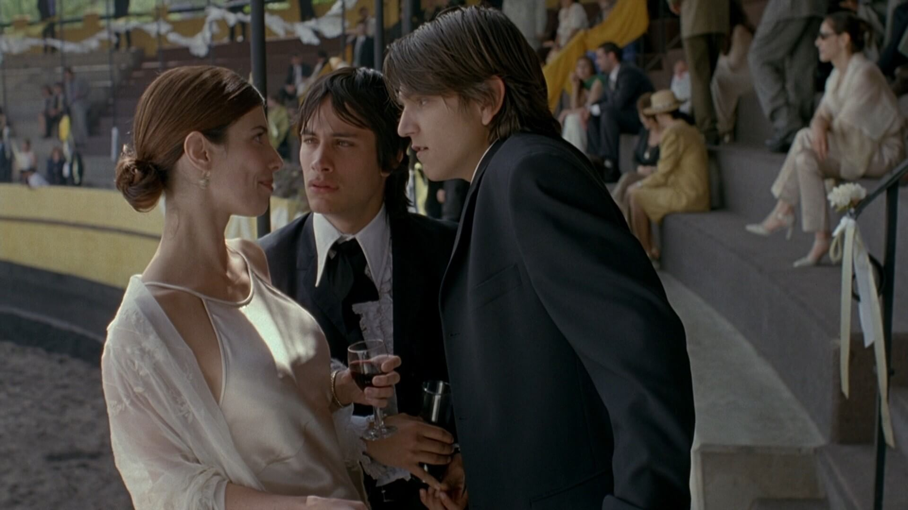
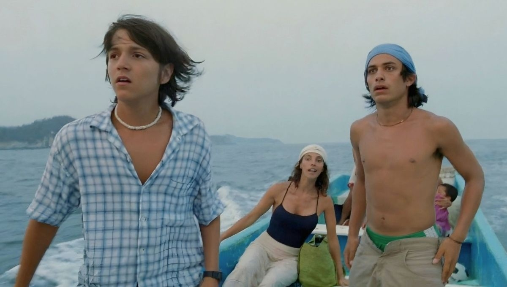
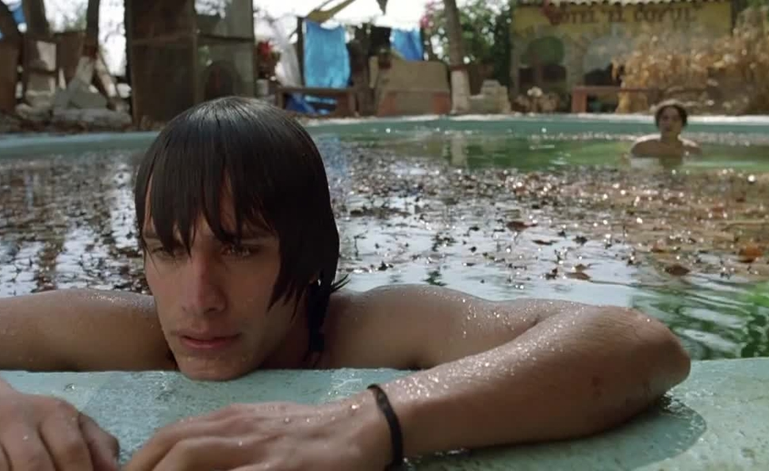

YTMT
MOMENTOS IMPORTANTES DE LA PELÍCULA

Tenoch y Julio conocen a Luisa
En esta escena, Tenoch y Julio se encuentran con Luisa por primera vez en la pelicula. Este momento es importante dado que aqui es donde se origina la idea del viaje a "boca del cielo", viaje creado para llamar la atención de Luisa. Invitandola a un viaje para despejarse de la vida que estaba viviendo. Este momento es importante ya que da inicio a la aventura principal a la que los personajes se enfrentan. Lo que comenzo como una mentira para llamar la atención de Luisa, termino siendo un viaje que transformo la relación entre los personajes.
Luisa emprende viaje con Tenoch y Julio
Luisa decide aceptar la invitación y emprender viaje. Esta decisión surge luego de enterarse de la infidelidad de su marido, Jano. Este momento es fundamental ya que le da inicio al viaje de los tres protagonistas. A medida que el viaje se iba desarrollando, Luisa se iba adentrando en un proceso de transformación personal, descubrimiento y libertad.


Tenoch y Julio discuten
Este momento es crucial en la película. Los secretos que ambos guardaban comienzan a salir a la luz, principalmente el hecho de que los personajes habian estado con las novias de ambos. Esto fomenta los celos y la desconfianza entre ellos. El momento demuestra que su relación no era tan fuerte como ellos creian. Se empiezan a notar las diferencias sociales, la comptencia, y las inseguridades que hay entre ellos. A partir de este momento el viaje deja de ser una simple aventura y se convierte en una experiencia emocional, personal y conflictiva.